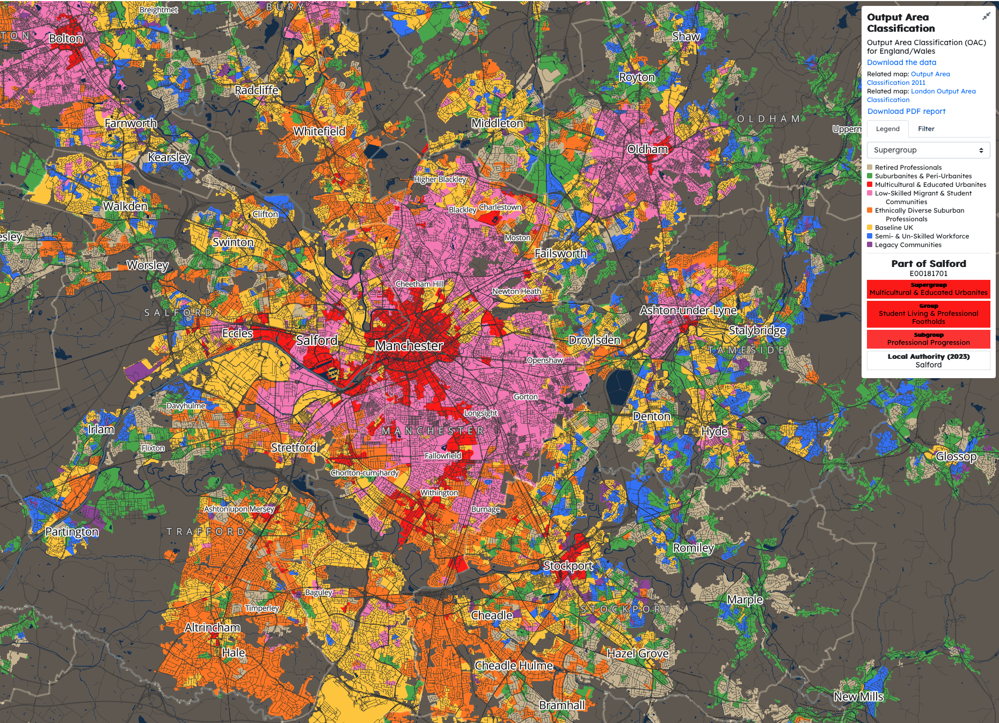

Classification of urban fabric
Dr Martin Fleischmann
Charles University, Prague, CZ
Cities are too complex to handle without simplification



Classification as a way of complexity reduction
Subdivide area into a set of distinct classes
Subdivide along which dimension?
EuroFab
European Urban Fabric Classification (upcoming)
Buildings and streets

Each class backed by a rich numerical description
- Comparison
- Predictive modelling
- Planning and zoning
Spatial Signatures
Classification of Great Britain based on form and function (existing)
Settlement delineation
Settlement hierarchy
What is next?
Classification of Central Europe
Classification of Europe
Predicted time-series
Do you want to follow up?